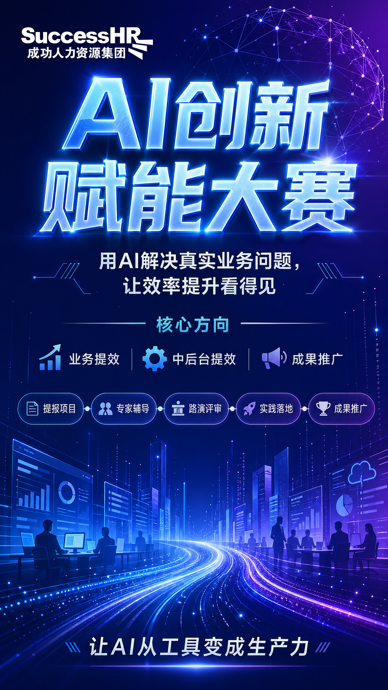
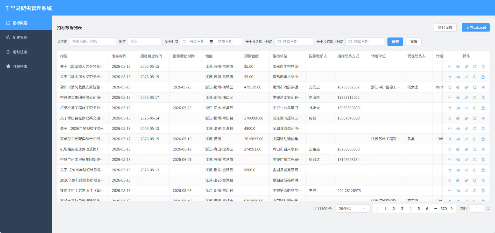
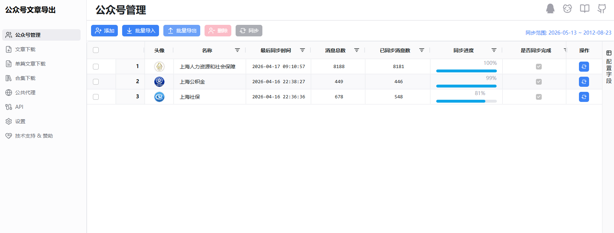
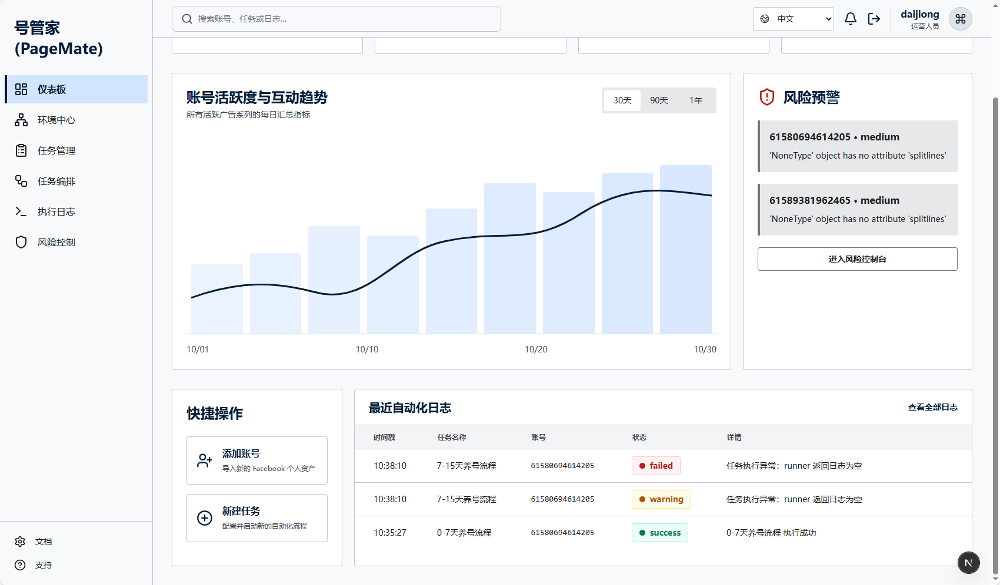

给公司同事的一场非技术分享：看懂 AI 已经能做什么，并为创新赋能大赛找到可落地的选题。
AI 的真正变化，
不是“工具变多”，
而是流程开始被重写。
大赛选题不要从“我要用哪个工具”开始，而要从“哪段流程高频、重复、耗时、容易出错”开始。
先把当前 AI 拆成业务同事能理解的五类能力：不是模型参数，而是它能替你处理哪类工作。
真正落地的 AI，不是一个孤立的聊天框，而是“模型 + Skills + 工具 + 人的确认”组成的任务系统。
OpenClaw 是业务同事
接触 Agent 工作方式的入口。
它让“提示词”不只是得到一段回答，而是触发一段可观察、可复核、可沉淀的任务流程。
接下来用 OpenClaw 场景测试证明：AI 已经从“输出文字”走向“交付结果”。
输入 Excel，给出整理规则，OpenClaw 生成整理后的文件，并通过钉钉发回。
海报、PPT、视频这类内容工作，AI 最适合先把“散落信息”整理成一个能看、能改、能传播的初稿。

外文 PDF 先由 AI 翻译并保留文档交付，人再负责关键条款、数据和合规风险的复核。
登录指定系统，进入员工中心，查找指定人员。RPA 的价值是把“机械点击 + 查找”交给自动化。
AI 不是只帮你做完一次。更有价值的是把输出沉淀进组织知识库，让下一次工作更快开始。
不同部门不用照搬同一个案例，要迁移的是案例背后的能力：读资料、调工具、跑流程、出结果。



每周都要做、很多人都觉得烦、资料分散在多个系统里、结果还经常返工。它就是大赛选题候选。
选一个真实流程，准备一组真实样例，用 OpenClaw 跑通任务链；需要公开信息就接爬虫，需要公众号资料就接文章平台，需要网页操作就接 RPA。
AI 创新不是把工作交给 AI，
而是重新设计我们和 AI 一起工作的流程。